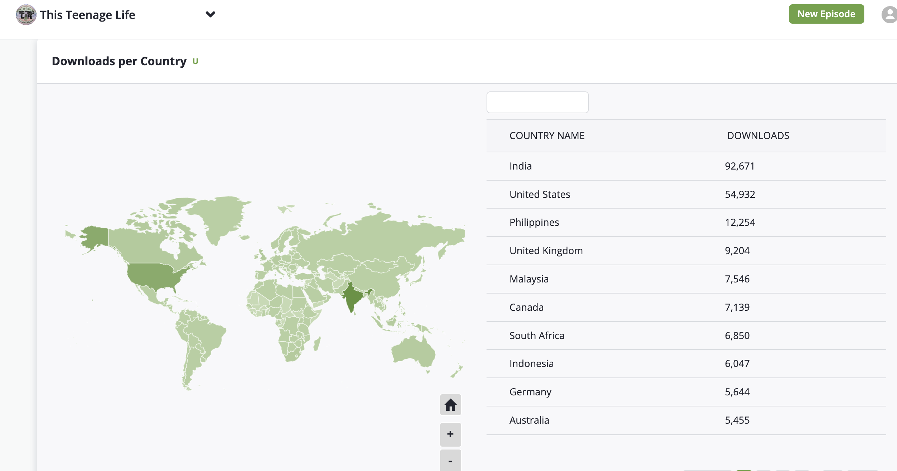

One thing you're looking forward to this week?
Why do I check my phone when I'm anxious?
How did people navigate before GPS?
How does tik tok get to know me?
Why is my phone camera "racist"?
Why am I addicted to my phone?
Why do beauty filters make people feel so bad?
Start at 30s
(>100 countries)
